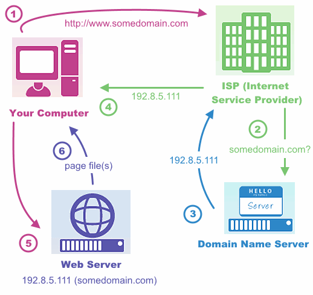

Welcome!
Welcome to GirlDevelopIt
Intro to ASP.NET Web Services
The World Wide Web
- A public client/server network
- Web browser
- the client
- makes HTTP "Requests"
- HTTP - Hypertext Transfer Protocol
- protocols define communication rules
- HTTP verbs and status codes
- Web server
- serves files in a "Response"
2-tier or 3-tier architecture
- Data layer
- Business logic layer
- Traditionally server languages
- Java, C# (ASP.NET), Python, Ruby, PHP
- Presentation layer
- Languages interpreted by the client
- HTML, CSS, Javascript
Data layer - part of back-end
Relational database servers
- MS SQL, MySQL, Postgres SQL
- Data Relationships are defined and enforced by the database
- A "Company" table has a one-to-many relationship with an "Employees" table
Data layer - part of back-end
Non-relational database servers
- MongoDB, RavenDB
- Relationships (if any) are typically defined in the business logic layer
- Popular with "Big Data" applications - data can be stored in a less structured way
Data layer - part of back-end
Data can also be stored in structured "flat files"
- XML (Extensible Markup Language)
- HTML is in fact XML that is interpreted by the browser
- CSV (comma-separated value) files
- JSON (Javascript Object Notation) files
- HTML is in fact XML that is interpreted by the browser
Business logic layer
The web server
A typical full-page request:
- User clicks a link or types a URL
- Browser sends the HTTP Request for a web page
Business logic layer
The web server
- URL: Uniform Resource Locator
The unique address of a file on the internet
Business logic layer
The web server
IP Address: Internet Protocol Address - A unique address for a computer.
DNS: Domain Name Service -
Associates domain names with web server IP addresses

Business logic layer
The web server
A typical full-page response:
- Web server listens for incoming HTTP Requests
- Binds the subdomain and domain:
- to a folder on the computer and retrieves a static HTML file from the file path of the URL
- or to a web application running on the web server
- A "back-end" programming language performs logical operations:
- Runs database queries to retrieve content data
- Constructs the HTML file by combining tags and content data
- Returns the HTML file and dependency files in the HTTP Response
Business logic layer
A partial page load:
- An HTTP request comes in from a Javascript event handler
- This is called an "AJAX" request
- AJAX - Asynchronous Javascript and XML
- The HTTP Response returns information to the Javascript
HTTP and Object Data Wrappers
- Wrappers provide a way to "describe" an object as text.
- Sent in the HTTP Request or Response "payload"
- Wrapped text is then parsed into an object in memory
- SOAP-XML
- JSON (JavaScript Object Notation)
Web Services - what does Restful mean?
- REST (Representational state transfer) is a web service "architectural style"
- A RESTful web service API:
- Uses "domain" objects (think of nouns)
- i.e. Calendar, Event
- Uses HTTP verbs for the actions
- i.e. GET, POST, PUT, DELETE
ASP.NET Web Services Technologies
- Web Services
- myService.asmx
- WCF Services
- Windows Communication Foundation
- myService.svc
- ASP.Net Web API
ASP.NET Web API
- ASP.NET 4 or higher (particularly MVC)
- Only transfers messages over HTTP protocol
- Microsoft intends this to be the HTTP services standard for ASP.NET going forward
- Resources:
Web Clients
- Clients are not always browsers
- Applications that run on a web server can act as a client and call web service APIs on another web server.
- For example:
Microsoft's Web Platform Installer
In a web browser, enter the URL to download Microsoft's Web Platform Installer, http://www.microsoft.com/web/downloads/platform.aspx
- Search for "Visual Studio Express 2013 for Web"
- Select "Visual Studio Express 2013 for Web with Microsoft Azure SDK - 2.4" released on 8/4/2014
- Click Install
Installation of Fiddler 2
Fiddler 2 will allow us to call our API, and view the raw HTTP Request and raw HTTP Response, before we build our client application.
- Installer will download automatically
- http://www.telerik.com/download/fiddler/fiddler2
- Double-click the installer to install
Web Service API - Project Setup
- Launch "VS Express 2013 for Web"
- Select "New Project..."
- "Empty" vs. "Single Page Application" templates
- "Single Page Application" installs a skeleton SPA built on Knockout.js. It supports login using a membership database or external authentication provider.
Web Service API - Project Setup
- Select "Empty" template and check off "Web API"
- Uncheck "Host in the Cloud"
- If interested, more about Azure cloud hosting:
Visual Studio Express Overview
- Left-side:
- Text Editor
- Toolbox
- Right-side:
- Solution Explorer
- Server Explorer
- Solution file
- Project file - can be more than one
- web.config